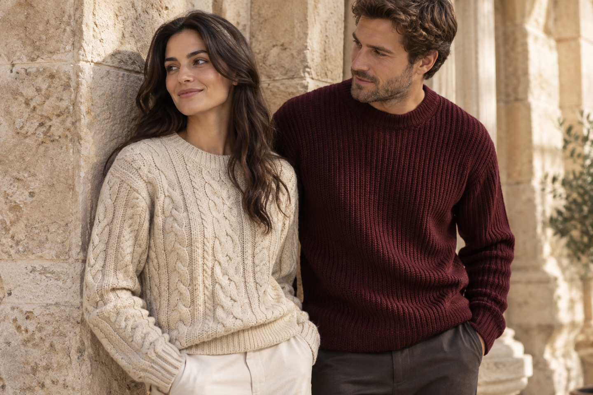
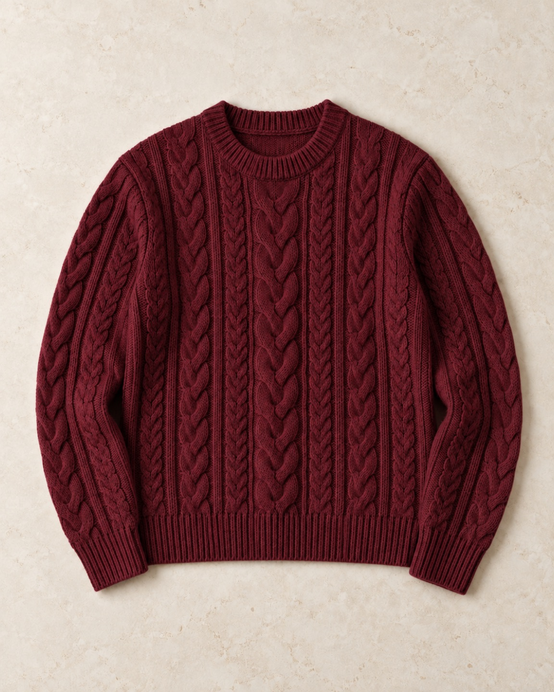

Prendas de punto, a tu manera
Tu nueva
capa favorita.
Texturas que abrigan. Colores que combinan contigo.
Explorar la colecciónDel primer café a la última vuelta.

La colección
Tres formas de abrigarte.
Encuentra el punto que va contigo.

Encuentra tu forma
El mismo punto.
Tu propio estilo.
Cerca del cuerpo o con un poco más de espacio. Elige entre corte Clásico y Relajado, en cinco tallas y tres colores fáciles de combinar.
Encuentra tu tallaPara elegir bien
Un buen fit.
Un poco de cuidado.
Encuentra tu talla
Mide una prenda que te quede bien, extendida sobre una superficie plana.
| Talla | Ancho | Largo |
|---|---|---|
| XS | 46 | 60 |
| S | 49 | 62 |
| M | 52 | 64 |
| L | 55 | 66 |
| XL | 58 | 68 |
El corte Relajado añade 4 cm de ancho y 2 cm de largo.
Clásico o Relajado
Clásico sigue una silueta recta. Relajado ofrece más amplitud para llevar capas debajo y cuesta Bs 30 más.
Cuida tu prenda
Lava a mano con agua fría y jabón suave. Evita retorcer. Seca en plano y guarda doblado para conservar la forma.
Sobre esta tienda
Hilar es una tienda de demostración con catálogo ficticio y pagos de prueba. Los precios se muestran en bolivianos. No se realizan envíos reales.